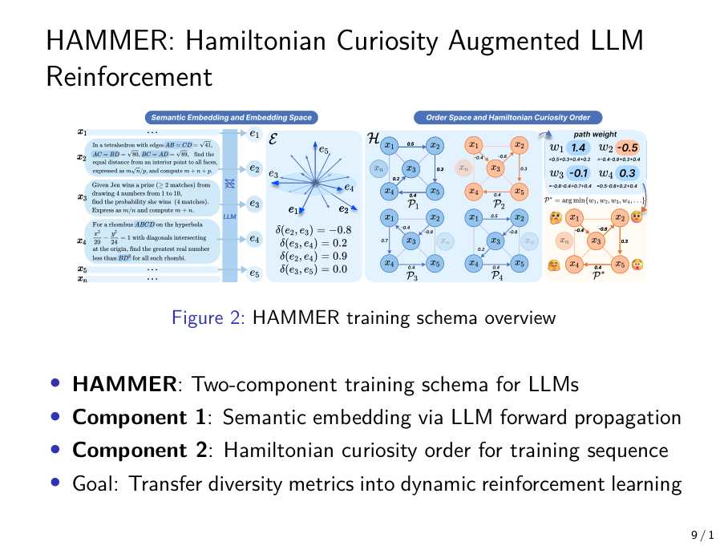

Component 1: Semantic embedding via LLM forward propagation
Component 2: Hamiltonian curiosity order for training sequence
Goal: Transfer diversity metrics into dynamic reinforcement learning

HAMMER training schema overview
Semantic Embedding Generation
Sentence embeddings derived from LLM's forward propagation
Captures the model's intrinsic semantic understanding
Each training sample xᵢ produces embedding eᵢ
Pairwise similarities form complete graph G = (V, E)
Similarity matrix S where Sᵢⱼ = sim(eᵢ, eⱼ)
Key Insight: Embeddings reflect how the LLM itself perceives semantic relationships, not external metrics.
Embedding Graph
Complete graph G from pairwise similarities
Semantic network derived from LLM forward propagation
Hamiltonian Curiosity Order
Complete graph G with n vertices (samples)
Hamiltonian path visits each vertex exactly once
Find path with minimum cumulative similarity
Minimizes: ∑_{k=1}^{n-1} S_{π(k),π(k+1)}
Result: Curiosity-driven training sequence
Why this works: By minimizing similarity between consecutive samples, we maximize semantic diversity during training, retaining exploration in early phases.
[Visualization: Graph with highlighted Hamiltonian path]
Summary: HAMMER Methodology
Core Idea
Transfer diversity metrics into dynamic reinforcement learning
Step 1
Generate semantic embeddings via LLM forward propagation
Step 2
Compute pairwise similarity matrix
Step 3
Find Hamiltonian path with minimum cumulative similarity
Result
Curiosity-driven training order retains exploration